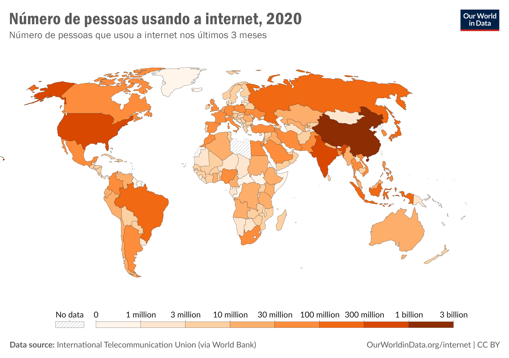

O que são Redes de Computadores?
Entenda a história e os elementos básicos que compõem uma rede de computador com a nossa aula introdutória ao assunto.
A Origem das Redes
A história das redes de computadores começa nos anos 1960, em plena Guerra Fria, quando o Departamento de Defesa dos Estados Unidos buscava maneiras de garantir a comunicação entre computadores mesmo diante de possíveis ataques. Isso levou à criação da ARPANET, a primeira rede de computadores, desenvolvida pela Agência de Projetos de Pesquisa Avançada (ARPA). Em 1969, a ARPANET fez a primeira conexão entre a Universidade da Califórnia em Los Angeles e o Instituto de Pesquisa de Stanford, marcando o início da comunicação digital entre computadores.
O Crescimento das Redes e o Nascimento da Internet
Nos anos 1970 e 1980, o conceito de redes expandiu-se rapidamente. Novos protocolos, como o TCP/IP (Transmission Control Protocol/Internet Protocol), foram desenvolvidos para padronizar a comunicação entre dispositivos. O TCP/IP se tornou o principal protocolo das redes de computadores e ainda é usado até hoje para garantir que dados possam viajar de um dispositivo para outro, independentemente de onde estão no mundo.
Durante esses anos, redes menores começaram a se interligar com a ARPANET, criando o que chamamos de "Internet", que ganhou popularidade e se tornou acessível ao público no início dos anos 1990. A criação do World Wide Web (WWW) em 1989 pelo cientista Tim Berners-Lee popularizou ainda mais a internet, permitindo que documentos e páginas fossem compartilhados e visualizados de forma fácil.
Conceitos Básicos de Redes
As redes de computadores podem variar em complexidade e tamanho, desde redes locais em residências até redes globais como a internet. Alguns conceitos básicos ajudam a entender melhor como elas funcionam:
- Dispositivos: São os elementos que se conectam na rede, como computadores, celulares, tablets, servidores, impressoras e roteadores.
- Protocolos: Conjunto de regras que determinam como os dados serão transmitidos e recebidos. O TCP/IP é o protocolo mais usado e base da internet, enquanto protocolos como HTTP e FTP facilitam tarefas específicas, como carregar páginas e transferir arquivos.
- Tipos de redes:
- ➤ LAN (Rede de Área Local): Conecta dispositivos em uma área limitada, como uma casa ou escritório.
- ➤ WAN (Rede de Área Ampla): Conecta redes em áreas maiores, como cidades ou países. A internet é o maior exemplo de WAN.
- ➤ WLAN (Rede Local Sem Fio): Rede local sem fio, geralmente usando Wi-Fi, permitindo que dispositivos conectem-se sem cabos.
- Endereço IP: Cada dispositivo conectado à internet possui um endereço IP (Internet Protocol), um número único que identifica o dispositivo e permite a comunicação entre redes.
- Firewall: Ferramenta de segurança que monitora e controla o tráfego de rede, protegendo os dispositivos contra acessos indesejados.
A Evolução e o Futuro das Redes

A evolução das redes de computadores continua. Com a chegada da banda larga e das conexões sem fio, hoje temos redes que conectam não apenas pessoas, mas também dispositivos e sistemas autônomos, no que chamamos de Internet das Coisas (IoT). Redes mais avançadas, como as redes 5G, prometem ainda mais velocidade e conectividade, abrindo portas para novas tecnologias, como carros autônomos e cidades inteligentes.
Atividades
- Qual o nome da primeira rede de computador?
- Quais são os principais tipos de rede de computador?
- O que é endereço de IP?
- Dê exemplos de dispositivos que se conectam a redes.
ARPANET.
LAN, WAN, WLAN.
Um número único que identifica o dispositivo e permite a comunicação entre redes.
Computadores, celulares, tablets, servidores, impressoras e roteadores.